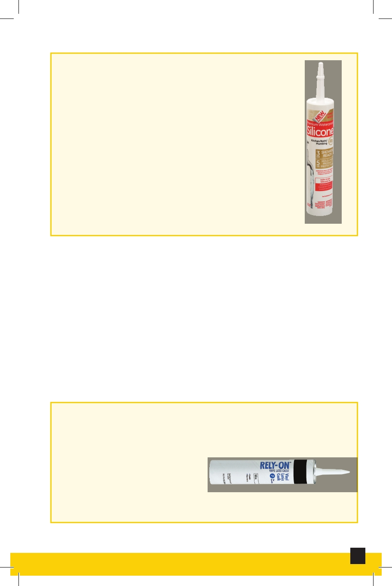

Silicone Caulk
The caulk of choice for showers, tubs,
and other areas exposed to water.
Outstanding adhesion with a long
life. Mildew resistant and watertight.
Silicone caulk won’t yellow or discolor
and usually cannot be painted. Must
use rubbing alcohol for clean-up. Also
releases ammonia during curing; work
with it in a ventilated area.
Silicone Caulk
Texturing
Gives a particular texture to a surface, for example Orange
Peel Texture, Sand Texture, and Pop Corn Texture.
Vacant Lock
Is a lock that is used in all vacant units and unlocks with the
same key.
Vinyl Latex Caulk
A type of caulk that is
acceptable in wet areas.
It adheres very well, dries
quickly, can be painted and
cleaned up with water.
Vinyl Latex Caulk
7
Interior and Exterior Maintenance and Repair